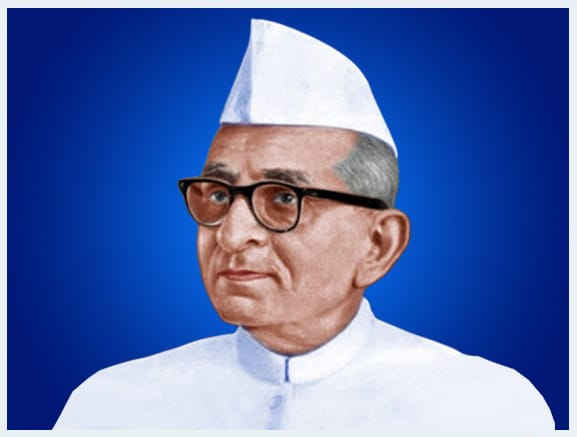

<div class="container mt-5 mb-5">
  <div class="row">
    <h2 class="page-title bottom-line" id="founder">Our Founder</h2>
    <div class="container-block">
      
      <p>
        The Bharatiya Vidya Bhavan was founded on Kartik Sud Purnima, Samvat
        1995 (November 7, 1938) by Kulapati Kanaiyalal Maneklal Munshi.
      </p>
      <p class="font-italic">
        ❝India will once again be acknowledged as the vishwa guru - a superpower
        that embodies the ideals of vasudhaiva kutumbakam - the global family. ❞
      </p>
      <h5 class="quoteBy">&mdash; KULAPATI K. M. MUNSHI</h5>
      <p>
        Kulapati Kanhaiyalal Maneklal Munshi founded the Bhavan on Monday,
        November 7, 1938. It was the beginning of an 'Adventure in Faith'. A
        faith in India's Past, Present and Future. The founding of Bhavan was
        based on the preservation and propagation of Bharatiya Sanskriti (Indian
        culture) and Sanskrit, the mother of languages, the Akshaya patra: the
        inexhaustible reservoir. This unpretentious endeavour was backed by
        Kulapati Munshi's amazing pragmatism.
      </p>
      <p>
        Over the years from being a modest Indological research institution, the
        Bhavan has steadily grown into a comprehensive, co-operative,
        apolitical, national movement with an international outlook. It seeks to
        inculcate a value-based life. The promotion of ethical and spiritual
        values in everything that it does.
      </p>
      <p>
        Bharatiya Vidya Bhavan is the only comprehensive organisation of its
        kind in India and perhaps the only one in the world. The Bhavan
        steadfastly adheres to the Vedic ideal:
      </p>
      <p class="font-italic">
        "Let noble thoughts come to us from every side."
      </p>
      <p>
        To Bhavan, Indian Culture is composite and comprehensive and includes
        the cultures of all religions and communities. It believes in the fusion
        and synthesis of the basic ideals and tenets of all faiths ... and an
        equal respect for all religions.
      </p>
      <p class="font-italic">
        "Harmony of all faiths. Sarva Dharma Sama Bhava."
      </p>

      <h3 class="page-title bottom-line mt-5">YEARS OF GROWTH</h3>
      <p>
        Over six decades of its life, the Bhavan has been steadfastly
        endeavouring to hold fast to the fundamental values of life and has been
        fostering these values, reintegrating them with new elements suited to
        modern conditions.
      </p>
      <p>
        This is being accomplished through its 367 Constituent Institutions, 119
        Kendras in India and 9 Overseas Centres, through its publications
        exceeding 1500 titles (with sales crossing 30 millions) including its
        monumental eleven volume history series, The History and Culture of the
        Indian People which have acquired world recognition, through its public
        libraries, through its journals in different languages, through the
        Sanskrit and Gita Examinations for which over 40,000 students appear
        every year from 550 centres, through management-staff, student-teacher
        dialogue, through cultural and educational tours and through All-India
        Colloquia, Seminars, Symposia, Lectures and Discourses on subjects of
        ethical and spiritual importance and through its monumental project for
        correlating ancient insights to modern discoveries in the fields of
        science, technology, life and health sciences and human values.
      </p>
      <p>
        Through its various schools and colleges from kindergarten to Post
        Graduate and Research spread all over India, the Bhavan imparts
        education in subjects ranging from Sanskrit, Indology, Indian Culture,
        Indian Classical Music, Dance, Drama, Yoga, Classical Languages and
        Ancient Scriptures to Arts, Science, Commerce, Engineering, Modern
        Management and Mass Communication and Information Technology and foreign
        languages like French, Spanish, Russian, German and Japanese. And
        through promotion of National Integration and Communal Harmony, Purity
        in Public Life and Rural Regeneration.
      </p>
      <p>
        Thus, Bhavan's programmes cover "all aspects of life from the cradle to
        the grave and beyond...it fills a growing vacuum in modern life" as
        Pandit Jawaharlal Nehru observed when he first visited the Bhavan in
        1950.
      </p>

      <!-- <h3 class="page-title bottom-line mt-5">Core values and philosophy</h3>
      <p>
        We believe that values, such as respect for elders, gratitude,
        compassion and integrity, are essential for the holistic development of
        our students. We strive to inculcate these values through storytelling
        and role-play. We also provide our students with an understanding of the
        teachings of great Indian philosophers, such as Swami Vivekananda and
        Mahatma Gandhi, and encourage them to reflect on the relevance of these
        teachings in their lives.
      </p> -->

      <h3 class="page-title bottom-line mt-5">Achievements and recognitions</h3>

      <div class="accordion" id="accordionExample">
        <div class="accordion-item">
          <h2 class="accordion-header" id="headingThree">
            <button
              class="accordion-button"
              type="button"
              data-bs-toggle="collapse"
              data-bs-target="#collapseThree"
              aria-expanded="false"
              aria-controls="collapseThree"
            >
              <h5 class="all-caps">
                Rajiv Gandhi Award for National Integration (1992)
              </h5>
            </button>
          </h2>
          <div
            id="collapseThree"
            class="accordion-collapse collapse show"
            aria-labelledby="headingThree"
            data-bs-parent="#accordionExample"
          >
            <div class="accordion-body">
              <p>
                The National Advisory Board of Priyadarshni Academy, a voluntary
                socio-cultural organisation devoted to the promotion of social,
                cultural, educational and other activities, selected Bharatiya
                Vidya Bhavan for Priyadarshni Academy's RAJIV GANDHI MEMORIAL
                AWARD FOR NATIONAL INTEGRATION- cash prize Rs. 1 Lakh & Trophy -
                for its outstanding contribution to National Integration,
                particularly through its Sarva Dharma Maitri Pratishthan. This
                Award is given by the Academy once in three years.
              </p>
            </div>
          </div>
        </div>

        <div class="accordion-item">
          <h2 class="accordion-header" id="headingFour">
            <button
              class="accordion-button collapsed"
              type="button"
              data-bs-toggle="collapse"
              data-bs-target="#collapseFour"
              aria-expanded="false"
              aria-controls="collapseFour"
            >
              <h5 class="all-caps">Communal Harmony Award (1999)</h5>
            </button>
          </h2>
          <div
            id="collapseFour"
            class="accordion-collapse collapse"
            aria-labelledby="headingFour"
            data-bs-parent="#accordionExample"
          >
            <div class="accordion-body">
              <p>
                The President of India Shri K.R Narayanan presented the Communal
                Harmony and National Integration Award for the year 1999 to the
                Bhavan at a special function on August 31, 2000, at the historic
                Ashoka Hall of Rashtrapati Bhavan, New Delhi. The President of
                the Bharatiya Vidya Bhavan Worldwide Bharat Ratna C. Subramanian
                received the Award on behalf of the Bhavan.
              </p>
            </div>
          </div>
        </div>
        <div class="accordion-item">
          <h2 class="accordion-header" id="headingOne">
            <button
              class="accordion-button collapsed"
              type="button"
              data-bs-toggle="collapse"
              data-bs-target="#collapseOne"
              aria-expanded="true"
              aria-controls="collapseOne"
            >
              <h5 class="all-caps">GANDHI PEACE PRIZE FOR THE YEAR 2002</h5>
            </button>
          </h2>
          <div
            id="collapseOne"
            class="accordion-collapse collapse"
            aria-labelledby="headingOne"
            data-bs-parent="#accordionExample"
          >
            <div class="accordion-body">
              <p>
                Gandhi Peace Prize wass awarded to Bharatiya Vidya Bhavan for
                its significant contribution towards spread of education,
                integration of the best of ancient and modern values and
                promotions of peace and harmony among all faiths and
                communities.
              </p>
              <div class="text-center">
                
              </div>
              <p>
                The President Dr. A.P.J Abdul Kalam presented Gandhi Peace Prize
                for 2002 to Bharatiya Vidya Bhavan at a function in New Delhi on
                March 18, 2003 (Tuesday). The former President Shri R.
                Venkataraman received the award on behalf of Bharatiya Vidya
                Bhavan. The Prime Minister Shri Atal Bihari Vajpayee also
                attended the function.
              </p>
            </div>
          </div>
        </div>
        <div class="accordion-item">
          <h2 class="accordion-header" id="headingTwo">
            <button
              class="accordion-button collapsed"
              type="button"
              data-bs-toggle="collapse"
              data-bs-target="#collapseTwo"
              aria-expanded="false"
              aria-controls="collapseTwo"
            >
              <h5 class="all-caps">COMMEMORATIVE POSTAGE STAMP 2013</h5>
            </button>
          </h2>
          <div
            id="collapseTwo"
            class="accordion-collapse collapse"
            aria-labelledby="headingTwo"
            data-bs-parent="#accordionExample"
          >
            <div class="accordion-body">
              <p>
                On the 75th Foundation Day of Bhavan (November 7, 2013), the
                Department of Post, Government of India released a postage stamp
                with First Day Cover and a pamphlet on Bharatiya Vidya Bhavan in
                New Delhi. Shri Kapil Sibal, hon'ble Minister of Communication
                and IT, Government of India was the Chief Guest at the event.
                The Stamp displays Bhavan's building in Mumbai over-looked by
                Kulapati K.M. Munshi.
              </p>
            </div>
          </div>
        </div>
      </div>

      <section id="leaders">
        <h3 class="page-title bottom-line mt-5">
          Mysuru Kendra - School Management Committee
        </h3>
        <p>
          This Kendra was established in 1989. It has been functioning from its
          own building since 2003.
        </p>
        <app-leaders-list></app-leaders-list>
      </section>

      <section id="faculty">
        <h5 class="page-title bottom-line mt-5">Faculty</h5>

        <table class="table table-responsive table-striped col-auto">
          <thead>
            <tr class="all-caps">
              <th>Sl. No.</th>
              <th>Information</th>
              <th>Details</th>
            </tr>
          </thead>
          <tbody>
            <tr>
              <td>1.</td>
              <td>Principal</td>
              <td>S. Lekha Nair</td>
            </tr>
            <tr>
              <td>2.</td>
              <td>Total number of teacher</td>
              <td>56</td>
            </tr>
            <tr>
              <td></td>
              <td>PGT</td>
              <td>21</td>
            </tr>
            <tr>
              <td></td>
              <td>TGT</td>
              <td>25</td>
            </tr>
            <tr>
              <td></td>
              <td>PRT</td>
              <td>10</td>
            </tr>
            <tr>
              <td>3.</td>
              <td>TEACHERS student RATIO</td>
              <td>1:30</td>
            </tr>
          </tbody>
        </table>

        <table class="table table-responsive table-striped mt-5 col-auto">
          <thead>
            <tr class="all-caps">
              <th>Name</th>
              <th>Qualification</th>
            </tr>
          </thead>
          <tbody>
            <tr *ngFor="let item of faculty">
              <td>{{ item.name }}</td>
              <td>{{ item.qualification }}</td>
            </tr>
          </tbody>
        </table>
      </section>

      <section id="non-faculty">
        <h5 class="page-title bottom-line mt-5">Non-Faculty</h5>

        <table class="table table-responsive table-striped col-auto">
          <thead>
            <tr class="all-caps">
              <th>Designation</th>
              <th>Name</th>
            </tr>
          </thead>
          <tbody>
            <tr *ngFor="let item of nonfaculty">
              <td>{{ item.designation }}</td>
              <td>{{ item.name }}</td>
            </tr>
          </tbody>
        </table>
      </section>
      <section id="busdrivers">
        <h5 class="page-title bottom-line mt-5">School Bus Drivers</h5>

        <table class="table table-responsive table-striped col-auto">
          <thead>
            <tr class="all-caps">
              <th>Route No</th>
              <th>Bus No.</th>
              <th>Driver Name</th>
              <th>Mob No</th>
              <th>Destination</th>
            </tr>
          </thead>
          <tbody>
            <tr *ngFor="let item of busdrivers">
              <td>{{ item.routeno }}</td>
              <td>{{ item.busno }}</td>
              <td>{{ item.driver }}</td>
              <td>{{ item.mob }}</td>
              <td>{{ item.destination }}</td>
            </tr>
          </tbody>
        </table>
      </section>
    </div>
  </div>
</div>
